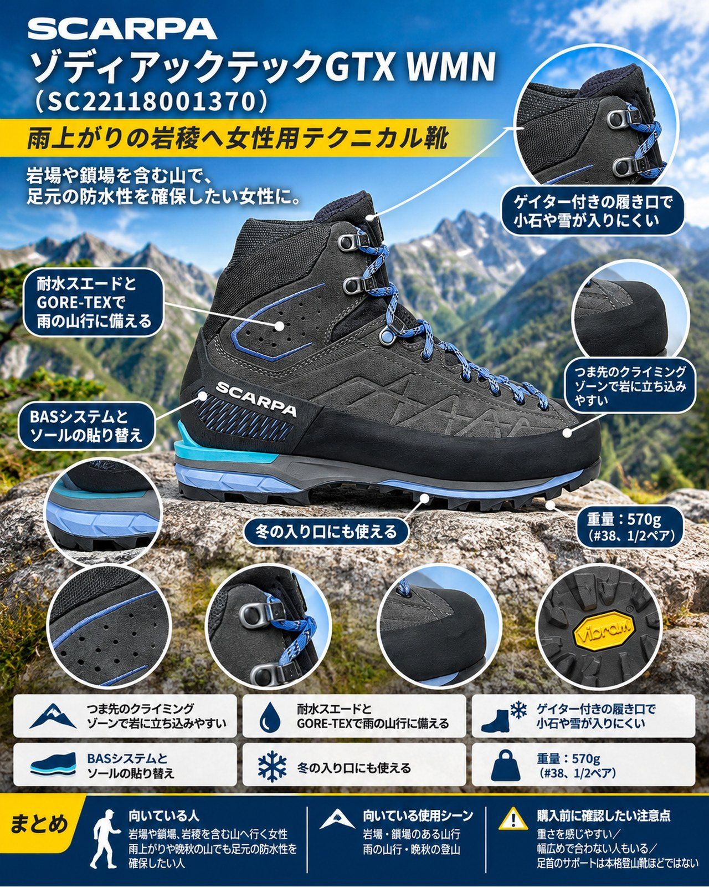

15日は西から雨の範囲が広がる予報で、北アルプスは冬山入り、低山は紅葉の見頃が続く時期です。雨上がりの岩場や鎖場のある山へ行く予定がある人には、足元の防水性と岩への立ち込みやすさが気になるところでしょう。
導入：こんな人・こんな山行に
15日は西から雨の範囲が広がる予報で、北アルプスは冬山入り、低山は紅葉の見頃が続く時期です。雨上がりの岩場や鎖場のある山へ行く予定がある人には、足元の防水性と岩への立ち込みやすさが気になるところでしょう。
スカルパの「ゾディアックテックGTX WMN」は、岩場や岩稜などクライミング要素を含む登山を得意とする、テクニカルな3シーズンマウンテンブーツの女性用モデルです。入門向けの幅広ブーツや低山向けの防水靴とは違い、岩稜歩きやスクランブルを含む山行を視野に入れた一足です。
基本スペック
※価格は時期によって変わります。購入前に販売ページで確認してください。
| 項目 | 内容 |
|---|---|
| 商品名 | ゾディアックテックGTX WMN（SCARPA） |
| 品番 | SC22118001370 |
| 重量 | 570g（#38、1/2ペア） |
| アッパー | ペルワンガー®耐水スエード（1.6〜1.8mm）＋ファブリック |
| ライニング | GORE-TEX® |
| ソール | ビブラム®ABSプレシジョンクランプ（セミワンタッチクランポン対応） |
| サイズ | 37〜42 |
| 生産国 | イタリア |
| 価格（税込） | 59,400円（2026年11月15日時点の表示） |
特徴とメリット
つま先のクライミングゾーンで岩に立ち込みやすいソールのつま先内側に広いクライミングゾーンがあり、細かいステップにも立ち込みやすい設計です。小さなホールドにも乗りやすく、岩場やガレ場でのグリップが期待できます。
耐水スエードとGORE-TEXで雨の山行に備えるアッパーはイタリア・ペルワンガー社の耐水スエード、ライニングはGORE-TEX®です。沢を渡っても浸水しなかったという使った人の声もあります（少数の体験です）。
ゲイター付きの履き口で小石や雪が入りにくい履き口には雪や小石の侵入を防ぐゲイターがあり、タングとフレックスポイントは1枚のエラスティック生地で構成されています。靴下のように足に沿う「ソックフィット」構造で、足首の動きに追従しやすい点も特徴です。
BASシステムとソールの貼り替え独自のBASシステムが地面の凹凸を吸収して歩行を安定させるとされています。ソールは貼り替えができ、長く使い続けられます。
冬の入り口にも使えるセミワンタッチクランポンに対応しているため、雪がちらつき始める時期の山行にも選択肢が広がります。
デメリット・注意点
- 重さを感じやすい：同じカテゴリーの靴の中では重めで、長時間歩くと疲れやすいという声があります。低山の長いハイキング中心なら、より軽い靴のほうが楽です。
- 幅広めで合わない人もいる：幅広めの作りとされ、細身の足には合わない可能性があります。必ず試し履きをしてください。
- 足首のサポートは本格登山靴ほどではない：ミッドカットのため、伝統的な登山靴ほどの足首サポートはないという声があります。重い荷物を背負う縦走には向きません。
- 濡れた岩はどの靴でも滑る：防水性やグリップがあっても、雨で濡れた岩や木の根、落ち葉の上は滑りやすくなります。雨天は無理せず計画を見直してください。
向いている人・向いていない人
◎向いている人
- 岩場や鎖場、岩稜を含む山へ行く女性
- 雨上がりや晩秋の山でも足元の防水性を確保したい人
- 本格的な冬靴までは要らないが、軽アイゼンより一歩進んだ装備も視野に入れたい人
- ソールを貼り替えて長く履きたい人
△向いていない人
- 整備された低山のハイキングが中心で、軽さを最優先したい人
- 細身の足で、幅に余裕のある靴が合わない人
- 重い荷物を背負った長期縦走で、しっかりした足首サポートが欲しい人
まとめ
ゾディアックテックGTX WMNは、つま先のクライミングゾーンと耐水スエード＋GORE-TEX®で、岩稜を含む山行に向いた女性用テクニカルブーツです。重さと幅広めのフィットには好みが分かれるので、店頭での試し履きをおすすめします。雨の日曜は無理をせず、晴れた日の岩稜歩きに備えて準備しておくのもよいでしょう。
この記事で紹介した商品
価格・重量・在庫は各ブランド公式サイトの記載（確認日つき）にもとづきます。商品を押すと、購入先を選べます。
この記事にはアフィリエイト広告が含まれます。リンク先での購入により、当サイトが報酬を受け取る場合があります。山行の前には、最新の気象とルートの状況を必ずご確認ください。